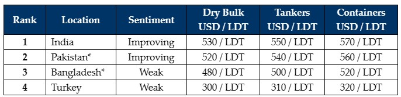

inWeekly Demolition Reports18/09/2023

Bullish Buyers in both, the Indian and Pakistani markets, continue to push on for another week as they manage to securesome of the recently recorded, high-priced sales from both – the dry bulk and container sectors.
Some of the recent container sales (in particular) have caught the eyes of many in the industry, especially as levels gradually edge back up into the high USD 500s/LDT (approaching USD 600/LDT), thereby providing prospective Owners of vintage units, food for thought about the potential future of their aging beauties.
India certainly has been the chief driver behind much of the recent activity, as domestic steel plate prices once again posted decent gains of about USD 13/LDT towards the end of the week. Moreover, following the conclusion of a successful G20 summit – in addition to a reported firming of international steel rates to the tune of about 2% – the overall business outlook across the country remains good – at least for the domestic Ship Recycling sector.
Pakistan is also not too far behind, with decent levels being displayed on available dry bulk units and even as L/C approvals once again start to gain some traction, especially after almost a year of being on the sidelines.
Bangladesh remains completely out of the buying, with levels down and L/C & bank approvals once again hard to come by. A decent number of well-priced Chinese-owned vessels have also been delivered and beached over the summer / monsoon months, but there seems little chance of any further deals being done below USD 500/LDT, as competing markets inch on higher.
Finally, Turkey seems to have entered into an over-extended holiday with virtually no activity being reported, and other than negative fundamentals (Lira and steel plate prices), the market has had virtually no movements being recorded for months on end.
Overall, the supply of tonnage remains decent going into sub-continent markets during Q4 of the year, with predominantly aging handy / Panamax sized dry bulk units & Feeder containers heading to the various recycling locations, in what will hopefully be a busy end to the year.
For week 37 of 2023, GMS demo rankings / pricing for the week are as below.

📄 Download PDF: Ship-recycling-market-insight-week-37-2023-Food-for-thought.pdfSource: GMS,Inc. ,https://www.gmsinc.net/gms_new/index.php/web